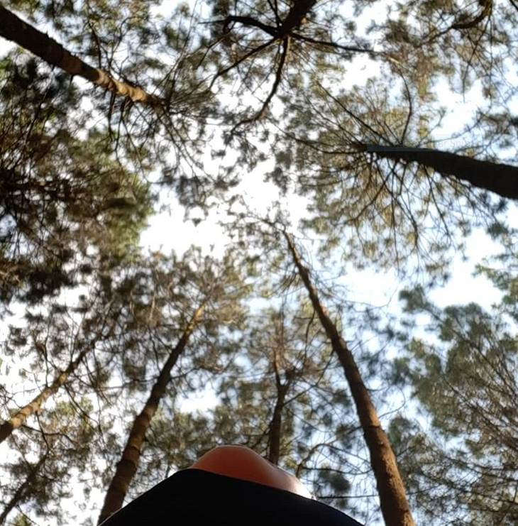

Nama Saya Fitri Indah Octaviani,asal Kendal Jawa Tengah.Perempuan biasa dengan segala mimpi yang aneh bagi kebanyakan manusia. Bagi saya menulis adalah Teman sepi yang menjadi candu kala tidak ada raga yang mampu menerima cerita cerita saya.Saya harap tulisan tulisan saya bisa mewakili perasaan makhluk bumi yang membutuhkan teman cerita tanpa raga nyata.Saya langit dengan segala warna dan rasa mulai hari ini kalian jadi teman cerita saya ya.Bagi saya hidup itu memang sebuah pilihan termasuk memilih siapa yang mau kita bahagiakan.Karna pada dasarnya dunia terlalu luas untuk kita penuhi dahaganya.Harus ada yang dikorbankan,tidak bisa semuanya.
